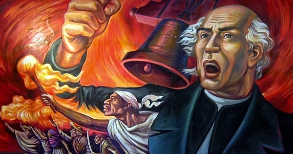

mes patrio
Hablar de septiembre en México es hablar de identidad, historia y orgullo. Conocido como el Mes Patrio, septiembre nos invita a recordar las raíces que sostienen a nuestra nación y a homenajear a los hombres y mujeres que lucharon por darnos libertad y soberanía. Durante este mes conmemoramos hitos fundamentales de nuestra historia: desde el heroísmo en el Castillo de Chapultepec el 13 de septiembre, pasando por la emotiva noche del 15 de septiembre con el tradicional Grito de Independencia, hasta la entrada del Ejército Trigarante el 27 de septiembre, que consumó nuestra independencia..
¡Viva México!.
